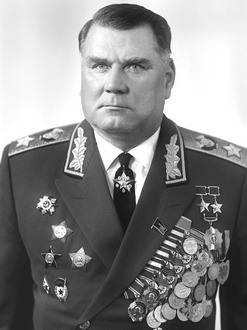

Якубовский Иван Игнатьевич

Якубовский Иван Игнатьевич – командир отдельной 91-й танковой бригады 1-го Украинского фронта, полковник; заместитель командира 6-го гвардейского танкового корпуса 1-го Украинского фронта, полковник.Родился 25 декабря 1911 (7 января 1912) года в деревне Зайцево ныне Горецкого района Могилёвской области (Белоруссия) в крестьянской семье. Белорус. После окончания семилетней школы участвовал в создании колхозов, работал разнорабочим на кирпичном заводе. В 1930-1932 годах учился в Оршанском педагогическом техникуме. Работал учителем сельской школы.Участник Великой Отечественной войны с июня 1941 года. В июле-сентябре 1941 года – командир танкового полка 121-й бригады 3-й армии Западного фронта (Орловское направление). В сентябре-декабре 1941 года – в резерве, затем в январе-марте 1942 года – заместитель командира танковой бригады; с марта 1942 по июнь 1944 года – командир отдельной 91-й танковой бригады на 1-м Украинском фронте.Указом Президиума Верховного Совета СССР от 10 января 1944 года за образцовое выполнение боевых заданий командования на фронте борьбы с немецкими захватчиками и проявленные при этом отвагу и геройство полковнику Якубовскому Ивану Игнатьевичу присвоено звание Героя Советского Союза с вручением ордена Ленина и медали «Золотая Звезда»Жил в Москве. Умер 30 ноября 1976 года. Похоронен на Красной площади в Москве. Урна с его прахом в Кремлёвской стене (левая сторона).
На главную